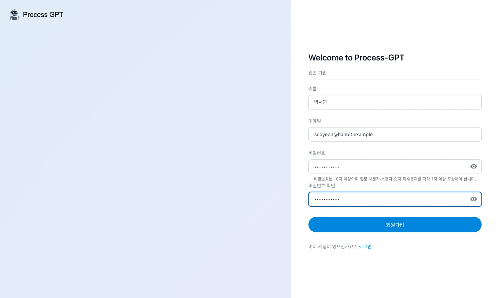
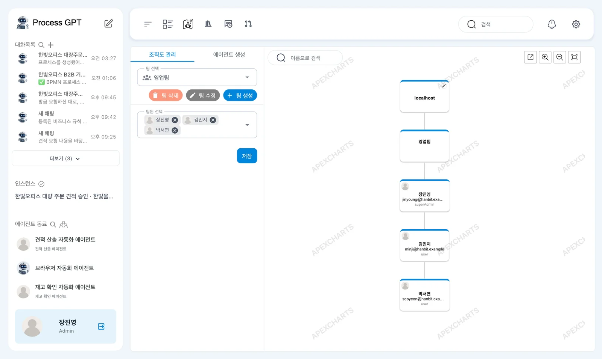
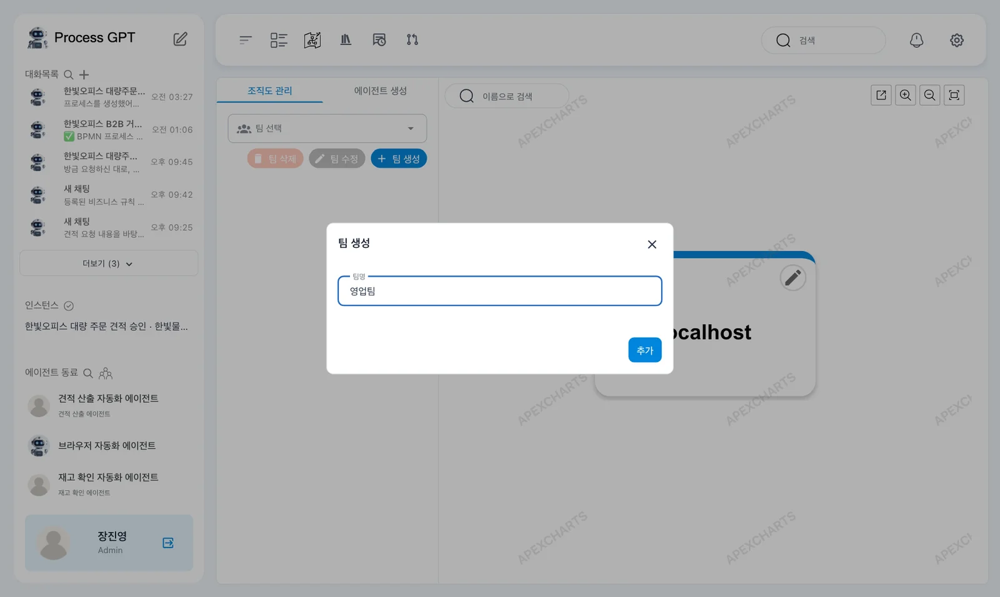
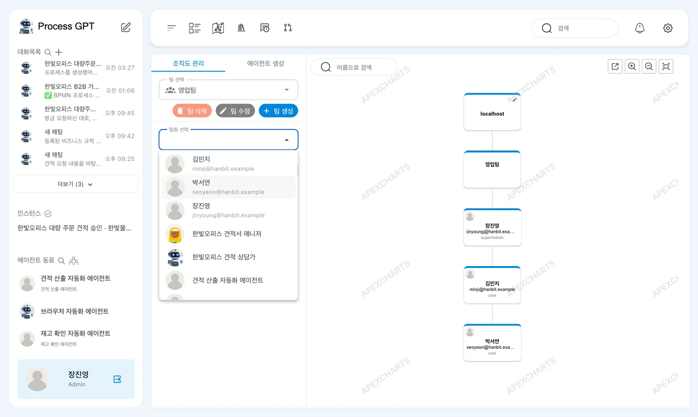
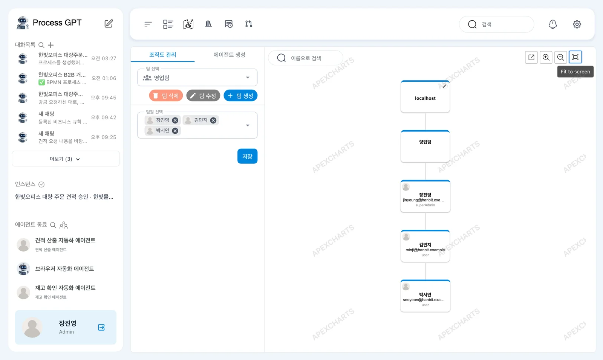
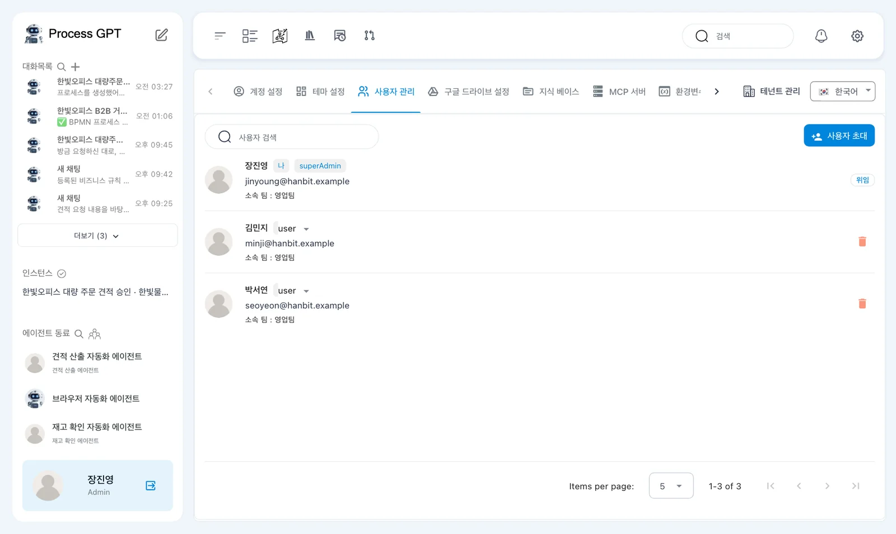
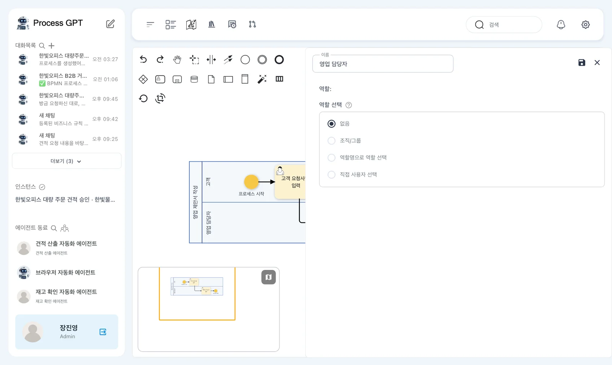
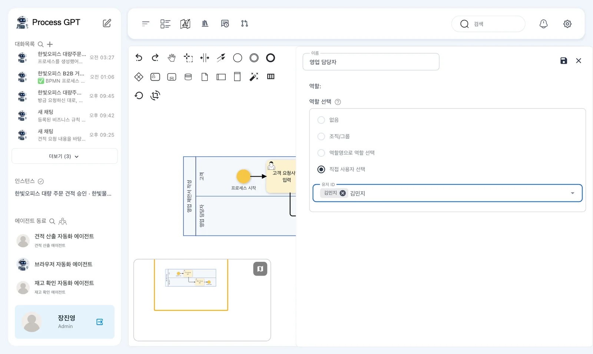
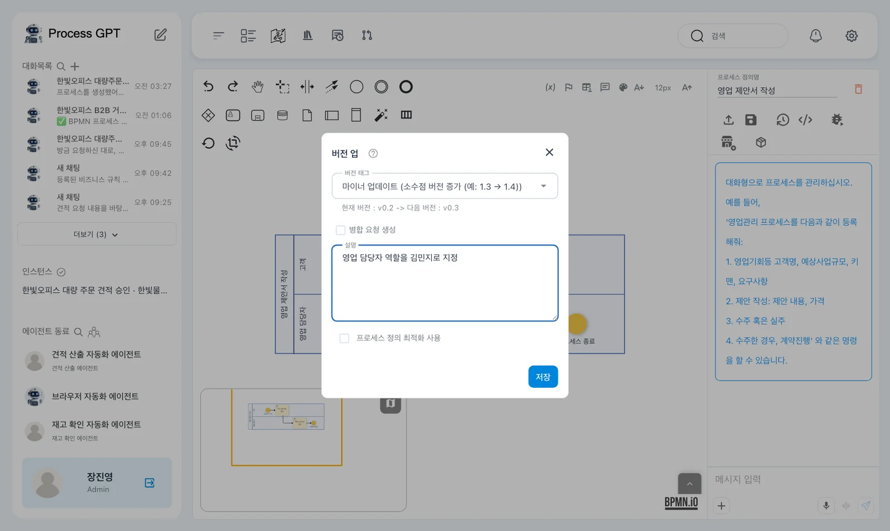
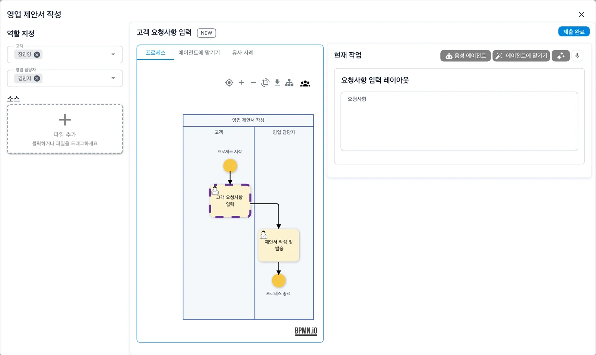

동료 계정을 영업팀에 넣고, 「영업 제안서 작성」의 「영업 담당자」 역할을 김민지로 지정합니다. 실행 창에서 담당자를 확인하고 실행은 다음 장에서 합니다.
팀과 역할#
한빛오피스는 사무 가구를 판매하는 B2B 회사입니다. 독자는 장진영 영업팀장으로 실습합니다. 김민지는 영업 담당, 박서연은 재무 담당입니다.
4장에서 첫 단계 이름을 「고객 요청사항 입력」으로 고쳐 저장했습니다. 이번에는 함께 일할 사람을 조직도에 넣고, 정의에서 역할 담당자를 정합니다.
팀은 조직도에서 사람을 묶는 단위입니다. 역할은 프로세스에서 맡는 일이며, 흐름도의 레인 하나가 역할 하나입니다. 영업팀에 김민지를 넣는 것과 「영업 담당자」 역할에 김민지를 지정하는 것은 따로 합니다.
따라 하기 1 — 동료 계정 준비하기#
조직도에서 팀원을 고를 때는 이미 가입한 계정만 목록에 나옵니다. 김민지와 박서연이 먼저 같은 설치본에 가입해야 합니다.
- 장진영이 로그인한 창을 두고, 다른 브라우저나 시크릿 창에서
http://localhost:8088을 엽니다. - 「사용해 보기」를 누르고 「계정 생성」으로 이동합니다. 1장에서 사용한 가입 화면입니다.
- 김민지는 이름에
김민지, 이메일에minji@hanbit.example을 입력하고 비밀번호를 정해 가입합니다. - 박서연도 같은 주소의 「계정 생성」에서 이름
박서연, 이메일seoyeon@hanbit.example로 가입합니다. - 각 계정의 가입이 끝나면 「회원가입에 성공했습니다.」가 나오고, 그 사람으로 로그인된 프로세스 체계도가 열리는지 확인합니다.

비밀번호 안내는 「비밀번호는 10자 이상이며 영문 대문자·소문자·숫자·특수문자를 각각 1자 이상 포함해야 합니다.」입니다. 다른 브라우저나 시크릿 창에서 가입하면 원래 창의 장진영 로그인은 그대로 남습니다. 조직도 실습은 장진영 창에서 이어갑니다.
로컬 설치본의 사용자 초대
설정의 「사용자 관리」에 있는 「사용자 초대」는 초대 메일을 보내는 기능입니다. 로컬 설치본은 메일을 보내지 않으므로, 이 실습에서는 동료가 직접 가입합니다. 사용자 관리와 초대는 18장에서 다시 다룹니다.
따라 하기 2 — 영업팀 만들기#
- 장진영 창에서 사이드바 「에이전트 동료」 옆의 사람 모양 아이콘을 누릅니다.
- 왼쪽 「조직도 관리」 탭을 봅니다. 「팀 선택」 칸과 「팀 삭제」·「팀 수정」·「팀 생성」 단추가 있습니다.
- 「팀 생성」을 누릅니다. 열린 「팀 생성」 창의 「팀명」에
영업팀을 입력하고 「추가」를 누릅니다. - 오른쪽 그림에서 「localhost」 아래에 「영업팀」 카드가 생겼는지 확인합니다. 왼쪽 「팀 선택」에도 「영업팀」이 골라집니다.


맨 위 「localhost」는 회사 이름 자리입니다. 관리자는 카드의 연필로 이름을 바꿀 수 있지만, 이 튜토리얼에서는 바꾸지 않습니다. 왼쪽의 다른 탭인 「에이전트 생성」은 9장에서 사용합니다.
따라 하기 3 — 팀원 넣고 확인하기#
- 「팀 선택」이 「영업팀」인지 확인하고, 아래의 「팀원 선택」 칸을 엽니다.
- 목록에서 이름과 이메일을 보고 장진영·김민지·박서연을 고릅니다. 고른 사람은 「팀원 선택」 칸에 칩으로 들어갑니다.
- 「저장」을 누릅니다. 오른쪽 그림에서 「영업팀」 아래에 세 사람의 카드가 붙었는지 확인합니다.
- 설정의 「사용자 관리」 탭에서도 세 사람의 이름 아래에 「소속 팀 : 영업팀」이 표시되는지 확인합니다.

그림의 목록에는 에이전트도 있습니다. 9장과 12장에서 만든 에이전트이므로, 이 장을 처음 따라 하는 독자의 목록에는 사람만 있습니다.

「사용자 관리」에서 장진영에게는 「나」와 「superAdmin」이 보입니다. 김민지와 박서연은 「user」입니다.

계정 권한과 역할은 다릅니다
팀원 카드의 「superAdmin」·「user」는 계정 권한입니다. 프로세스의 「고객」·「영업 담당자」 역할을 뜻하지 않습니다. 현재 버전의 조직도에는 사람마다 직책이나 담당 역할을 적는 칸이 없습니다.
따라 하기 4 — 영업 담당자를 김민지로 정하기#
팀원을 넣었으므로, 이제 정의의 레인에서 담당자를 정합니다. 이 실습에서 담당자를 정하기 전에 실행 창을 열었을 때는 「고객」과 「영업 담당자」가 모두 장진영이었습니다.
레인에 담당자가 없으면 실행 창이 조직도를 참고해 담당자를 추천합니다. 맞는 사람을 고르지 못하면 실행하는 사람을 넣습니다. 김민지가 맡도록 레인에 직접 지정합니다.
- 프로세스 체계도에서 「영업 제안서 작성」 카드를 누릅니다. 흐름도 위에 「시뮬레이션」·「수정」·「실행」이 있는 하위 프로세스 화면이 열립니다.
- 「수정」을 누릅니다. 흐름도 왼쪽의 세로 글씨 「영업 담당자」 레인 이름 부분을 두 번 누릅니다.
- 오른쪽 레인 패널에서 「이름」이 「영업 담당자」인지 확인합니다. 「역할 선택」은 처음에 「없음」입니다.
- 「직접 사용자 선택」을 고릅니다. 새로 나온 「유저 ID」 칸에
김민지를 입력합니다. - 목록의 「김민지 minji@hanbit.example」을 골라 칩으로 넣습니다.
- 패널 오른쪽 위 저장 아이콘을 누르고, 닫기(X)로 패널을 닫습니다.

「역할 선택」에는 「없음」·「조직/그룹」·「역할명으로 역할 선택」·「직접 사용자 선택」이 있습니다. 「조직/그룹」을 고르면 조직도의 팀을 고르는 칸이 나옵니다. 이 튜토리얼에서는 「조직/그룹」과 「역할명으로 역할 선택」을 쓰지 않습니다.

따라 하기 5 — 버전으로 저장하기#
- 정의 화면 오른쪽 위 저장 아이콘을 누릅니다. 「버전 업」 창이 열립니다.
- 「버전 태그」는 「마이너 업데이트 (소수점 버전 증가 (예: 1.3 → 1.4))」 그대로 둡니다.
- 「설명」에
영업 담당자 역할을 김민지로 지정을 입력합니다. - 「병합 요청 생성」과 「프로세스 정의 최적화 사용」 체크는 건드리지 않고 「저장」을 누릅니다.

그림에는 「현재 버전 : v0.2 -> 다음 버전 : v0.3」이 보입니다. 버전 숫자는 4장까지 저장한 횟수에 따라 다를 수 있습니다. 레인 패널 저장에 이어 정의도 저장합니다.
따라 하기 6 — 실행 전 역할 확인하기#
- 「영업 제안서 작성」 하위 프로세스 화면에서 「실행」을 누릅니다.
- 실행 창 왼쪽 「역할 지정」을 봅니다. 「고객」은 장진영, 「영업 담당자」는 김민지인지 확인합니다.
- 이번에는 제출하지 않고 닫기(X)로 창을 닫습니다.
닫아도 남는 할 일
현재 버전에서는 실행 창을 열기만 해도 첫 단계의 할 일이 만들어져, 제출하지 않고 닫아도 「나의 업무」에 「고객 요청사항 입력」 카드가 남을 수 있습니다. 6장에서 할 일을 고를 때는 카드의 인스턴스 이름을 봅니다.

첫 단계 「고객 요청사항 입력」의 역할인 「고객」은 실행 창을 연 장진영이 맡습니다. 실행 창의 역할 칸을 열면 사람이나 에이전트를 골라 이번 실행의 담당자만 바꿀 수도 있습니다. 여기서는 정의에 지정한 김민지를 그대로 확인합니다.
13장의 「한빛오피스 대량 주문 견적 승인」에서도 같은 방법을 씁니다. 그때는 영업팀장 역할에 장진영, 재무 담당 역할에 박서연을 정합니다.
다음 장으로#
영업팀을 만들고 「영업 담당자」를 김민지로 정했습니다. 6장에서는 장진영이 고객 요청을 제출하고, 김민지가 받은 할 일을 처리해 한 건의 실행을 끝냅니다.
확인 문제
- 김민지가 「팀원 선택」 목록에 나오려면 무엇을 먼저 해야 하나요?
- 팀원 카드의 「user」는 「영업 담당자」 역할을 뜻하나요?
- 「영업 담당자」를 김민지로 정해 정의에 남기려면 어디에서 지정하고 저장하나요?
답
- 김민지가 같은 설치본에서 직접 가입해야 합니다. 팀원 목록에는 이미 가입한 계정이 나옵니다.
- 아닙니다. 「user」는 계정 권한입니다. 프로세스 역할은 정의의 레인에서 다룹니다.
- 「영업 담당자」 레인 패널에서 「직접 사용자 선택」으로 김민지를 고릅니다. 패널을 저장한 뒤 정의도 버전으로 저장합니다.